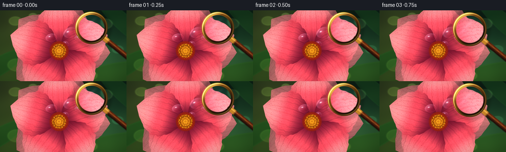
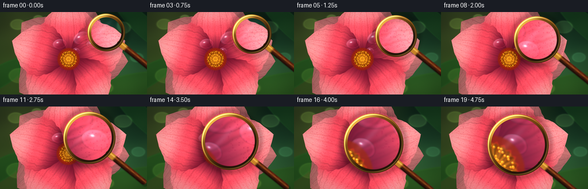
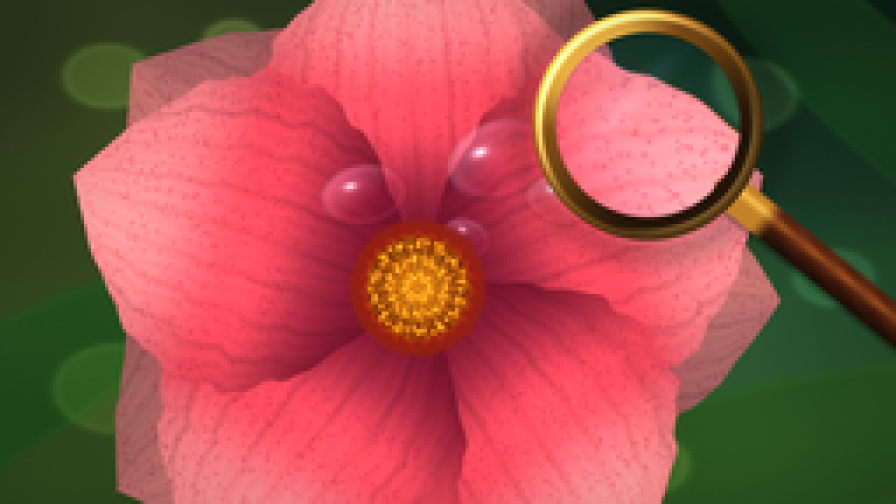
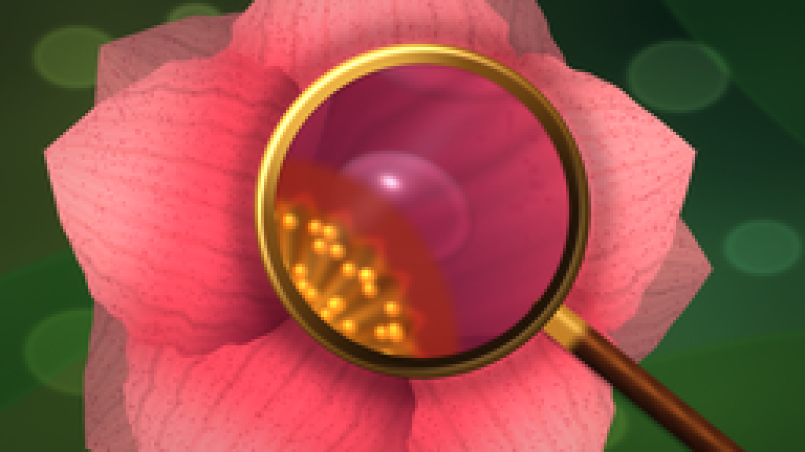

CODING AGENTS AS PIXEL WORLD MODELS
traex/DeepSeek-V4.1-Flash · phygen_070
点击播放 · 原生 RGB 像素
逐轮保存的候选
回放视频、检查图与代码变化。
每份候选均可单独播放。实际图片检查记录在下方工具轨迹中。
候选 01播放与检查图
点击播放 · 原生 RGB 像素


展开代码变化
--- 上一保存版本
+++ 本次保存版本
@@ -0,0 +1,401 @@
+from pathlib import Path
+
+import numpy as np
+from PIL import Image
+from scipy.ndimage import gaussian_filter
+
+import artifact_io
+
+
+W, H, FPS = 256, 144, 4.0
+FRAMES = 20
+SS = 3
+FW, FH = W * SS, H * SS
+
+
+def smoothstep(edge0, edge1, x):
+ t = np.clip((x - edge0) / (edge1 - edge0), 0.0, 1.0)
+ return t * t * (3.0 - 2.0 * t)
+
+
+def mix(a, b, t):
+ t = np.asarray(t, dtype=np.float32)
+ if t.ndim == 2:
+ t = t[..., None]
+ return a * (1.0 - t) + b * t
+
+
+def sample_bilinear(image, x, y):
+ h, w = image.shape[:2]
+ x = np.clip(x, 0.0, w - 1.001)
+ y = np.clip(y, 0.0, h - 1.001)
+ x0 = np.floor(x).astype(np.int32)
+ y0 = np.floor(y).astype(np.int32)
+ x1 = np.minimum(x0 + 1, w - 1)
+ y1 = np.minimum(y0 + 1, h - 1)
+ fx = (x - x0)[..., None]
+ fy = (y - y0)[..., None]
+ top = image[y0, x0] * (1.0 - fx) + image[y0, x1] * fx
+ bottom = image[y1, x0] * (1.0 - fx) + image[y1, x1] * fx
+ return top * (1.0 - fy) + bottom * fy
+
+
+def hash_noise(x, y):
+ value = np.sin(x * 12.9898 + y * 78.233 + 0.317) * 43758.5453
+ return value - np.floor(value)
+
+
+def background_layers(xx, yy):
+ u = xx / FW
+ v = yy / FH
+ top = np.array([0.035, 0.105, 0.070], dtype=np.float32)
+ bottom = np.array([0.170, 0.265, 0.105], dtype=np.float32)
+ bg = mix(top, bottom, smoothstep(0.0, 1.0, v))
+
+ warm = np.exp(-(((u - 0.17) / 0.43) ** 2 + ((v - 0.12) / 0.55) ** 2))
+ bg += warm[..., None] * np.array([0.15, 0.13, 0.045], dtype=np.float32)
+ cool = np.exp(-(((u - 0.86) / 0.30) ** 2 + ((v - 0.70) / 0.42) ** 2))
+ bg += cool[..., None] * np.array([0.015, 0.085, 0.080], dtype=np.float32)
+
+ def leaf(cx, cy, rx, ry, angle, color, opacity):
+ ca, sa = np.cos(angle), np.sin(angle)
+ dx, dy = xx - cx, yy - cy
+ lx = dx * ca + dy * sa
+ ly = -dx * sa + dy * ca
+ radius = np.sqrt((lx / rx) ** 2 + (ly / ry) ** 2)
+ mask = smoothstep(1.08, 0.92, radius)
+ edge = np.exp(-((radius - 0.95) / 0.06) ** 2)
+ nonlocal bg
+ bg = mix(bg, np.asarray(color, dtype=np.float32), mask * opacity)
+ bg += edge[..., None] * np.asarray(color, dtype=np.float32) * opacity * 0.10
+
+ leaf(-0.05 * FW, 0.83 * FH, 0.32 * FW, 0.13 * FH, -0.52, [0.105, 0.285, 0.100], 0.75)
+ leaf(0.98 * FW, 0.18 * FH, 0.28 * FW, 0.12 * FH, 0.74, [0.090, 0.240, 0.110], 0.68)
+ leaf(0.86 * FW, 0.91 * FH, 0.34 * FW, 0.15 * FH, -0.22, [0.145, 0.315, 0.095], 0.64)
+
+ bokeh = [
+ (0.12, 0.15, 0.062, [0.54, 0.72, 0.27], 0.18),
+ (0.26, 0.08, 0.040, [0.72, 0.82, 0.43], 0.19),
+ (0.83, 0.19, 0.073, [0.52, 0.77, 0.41], 0.15),
+ (0.93, 0.55, 0.055, [0.35, 0.69, 0.48], 0.14),
+ (0.13, 0.77, 0.088, [0.50, 0.67, 0.24], 0.13),
+ (0.72, 0.92, 0.060, [0.65, 0.72, 0.28], 0.12),
+ ]
+ for cx, cy, radius, color, opacity in bokeh:
+ dist = np.sqrt(((u - cx) * 1.25) ** 2 + (v - cy) ** 2)
+ disk = smoothstep(radius + 0.008, radius - 0.008, dist)
+ halo = np.exp(-((dist - radius) / 0.009) ** 2)
+ bg += disk[..., None] * np.asarray(color, dtype=np.float32) * opacity
+ bg += halo[..., None] * np.asarray(color, dtype=np.float32) * opacity * 0.42
+
+ fine = np.sin(xx * 0.021 + yy * 0.017) * np.sin(xx * 0.009 - yy * 0.027)
+ bg += fine[..., None] * np.array([0.010, 0.015, 0.006], dtype=np.float32)
+ return np.clip(bg, 0.0, 1.0)
+
+
+def petal_layer(bg, xx, yy, cx, cy, angle, length, width, phase, back=False):
+ ca, sa = np.cos(angle), np.sin(angle)
+ dx, dy = xx - cx, yy - cy
+ u = dx * ca + dy * sa
+ v = -dx * sa + dy * ca
+ un = u / length
+ xn = (u - 0.5 * length) / (0.5 * length)
+ valid_x = (xn > -1.02) & (xn < 1.02)
+ xn_c = np.clip(xn, -0.999, 0.999)
+ v_bound = width * np.sqrt(np.maximum(0.0, 1.0 - xn_c**2))
+ v_bound *= 1.0 + 0.026 * np.sin(19.0 * xn_c + phase) + 0.012 * np.sin(41.0 * xn_c - phase)
+ v_bound = np.maximum(v_bound, 1.0)
+ vn = v / v_bound
+ inside = 1.0 - xn_c**2 - vn**2
+ mask = smoothstep(-0.012, 0.018, inside) * valid_x
+ if np.max(mask) <= 0.0:
+ return bg
+
+ un_c = np.clip(un, 0.0, 1.0)
+ side = np.clip(0.5 + 0.5 * vn, 0.0, 1.0)
+ base = np.array([0.49, 0.075, 0.175], dtype=np.float32)
+ middle = np.array([0.94, 0.285, 0.355], dtype=np.float32)
+ tip = np.array([1.00, 0.560, 0.575], dtype=np.float32)
+ if back:
+ base = base * 0.60
+ middle = middle * 0.67 + np.array([0.05, 0.01, 0.045], dtype=np.float32)
+ tip = tip * 0.70
+
+ radial = smoothstep(0.02, 0.92, un_c)
+ color = mix(base, middle, smoothstep(0.0, 0.54, radial))
+ color = mix(color, tip, smoothstep(0.56, 1.0, radial))
+ color = mix(color, color * 0.79, smoothstep(0.44, 1.0, np.abs(vn)) * 0.50)
+
+ highlight = np.exp(-((vn + 0.24) / 0.43) ** 2) * (0.20 + 0.80 * radial)
+ color += highlight[..., None] * np.array([0.13, 0.075, 0.070], dtype=np.float32)
+ base_shadow = np.exp(-((un_c - 0.03) / 0.17) ** 2)
+ color *= 1.0 - 0.22 * base_shadow[..., None]
+
+ vein = np.zeros_like(u)
+ for offset in (-0.76, -0.53, -0.29, -0.04, 0.22, 0.48, 0.73):
+ curved = offset + 0.035 * np.sin(un_c * 5.4 + phase + offset * 2.0)
+ vein += np.exp(-((vn - curved) / 0.024) ** 2) * (0.45 + 0.55 * np.sin(np.pi * un_c) ** 0.6)
+ color *= 1.0 - 0.105 * np.clip(vein, 0.0, 1.0)[..., None]
+
+ ridges = 0.5 + 0.5 * np.sin(vn * 63.0 + un_c * 8.0 + phase)
+ color *= (0.975 + 0.050 * ridges)[..., None]
+ speck = hash_noise(np.floor(xx / 2.3), np.floor(yy / 2.3))
+ speck = smoothstep(0.86, 0.98, speck) * smoothstep(0.10, 0.35, un_c)
+ color = mix(color, np.array([0.58, 0.09, 0.20], dtype=np.float32), speck * 0.32)
+
+ edge_glow = np.exp(-((np.sqrt(np.maximum(inside, 0.0)) - 0.0) / 0.045) ** 2)
+ color += edge_glow[..., None] * np.array([0.065, 0.025, 0.035], dtype=np.float32)
+ color = np.clip(color, 0.0, 1.0)
+ return mix(bg, color, mask * (0.90 if back else 0.965))
+
+
+def draw_flower(bg, xx, yy):
+ cx, cy = 0.466 * FW, 0.570 * FH
+ back_length, back_width = 0.405 * FW, 0.173 * FW
+ for i in range(5):
+ angle = -np.pi / 2 + i * 2.0 * np.pi / 5.0 + 0.35
+ bg = petal_layer(bg, xx, yy, cx, cy, angle, back_length, back_width, i * 1.7, back=True)
+
+ length, width = 0.405 * FW, 0.181 * FW
+ for i in range(5):
+ angle = -np.pi / 2 + i * 2.0 * np.pi / 5.0
+ bg = petal_layer(bg, xx, yy, cx, cy, angle, length, width, i * 1.23 + 0.4)
+
+ return bg, cx, cy
+
+
+def draw_dew(bg, xx, yy, cx, cy, rx, ry, angle, strength=1.0):
+ ca, sa = np.cos(angle), np.sin(angle)
+ dx, dy = xx - cx, yy - cy
+ lx = (dx * ca + dy * sa) / rx
+ ly = (-dx * sa + dy * ca) / ry
+ radius = np.sqrt(lx * lx + ly * ly)
+ mask = smoothstep(1.02, 0.93, radius)
+ if np.max(mask) <= 0:
+ return bg
+
+ dome = np.clip(1.0 - radius * radius, 0.0, 1.0) ** 0.55
+ light = np.clip(-0.62 * lx - 0.78 * ly + 0.18, 0.0, 1.0)
+ rim = np.exp(-((radius - 0.83) / 0.11) ** 2)
+ caustic = np.exp(-(((lx + 0.30) / 0.23) ** 2 + ((ly + 0.34) / 0.20) ** 2))
+ hot = np.exp(-(((lx + 0.29) / 0.11) ** 2 + ((ly + 0.35) / 0.09) ** 2))
+
+ water = bg.copy()
+ water *= (0.72 + 0.42 * dome)[..., None]
+ water += (light * 0.19 + caustic * 0.20)[..., None] * np.array([0.78, 0.90, 1.00], dtype=np.float32)
+ water += rim[..., None] * np.array([0.32, 0.10, 0.16], dtype=np.float32) * 0.35
+ water += hot[..., None] * np.array([1.00, 0.97, 0.91], dtype=np.float32) * 0.68
+ return mix(bg, np.clip(water, 0.0, 1.0), mask * strength)
+
+
+def draw_flower_center(bg, xx, yy, cx, cy):
+ dx, dy = xx - cx, yy - cy
+ r = np.sqrt(dx * dx + dy * dy)
+ theta = np.arctan2(dy, dx)
+ outer = smoothstep(61.0, 55.0, r)
+ disc = smoothstep(48.0, 42.0, r)
+
+ outer_color = np.array([0.54, 0.115, 0.055], dtype=np.float32)
+ bg = mix(bg, outer_color, outer * 0.88)
+
+ gold = np.array([0.94, 0.585, 0.115], dtype=np.float32)
+ dark_gold = np.array([0.55, 0.245, 0.030], dtype=np.float32)
+ center_color = mix(dark_gold, gold, smoothstep(0.0, 1.0, np.clip(1.0 - r / 48.0, 0.0, 1.0)))
+ center_color += (0.07 * np.cos(theta * 18.0))[..., None] * np.array([1.0, 0.8, 0.35], dtype=np.float32)
+ center_color *= (0.88 + 0.12 * np.sin(theta * 31.0 + r * 0.20))[..., None]
+ bg = mix(bg, np.clip(center_color, 0.0, 1.0), disc * 0.96)
+
+ # Stamens: warm dots with tiny dark bases and pale specular points.
+ for ring, count, radius in ((0, 25, 10.0), (1, 44, 24.0), (2, 58, 38.0)):
+ for j in range(count):
+ ang = j * 2.0 * np.pi / count + ring * 0.31 + 0.17 * np.sin(j * 2.4)
+ rr = radius + 2.6 * np.sin(j * 1.7 + ring)
+ px = cx + rr * np.cos(ang)
+ py = cy + rr * np.sin(ang)
+ dr = np.sqrt((xx - px) ** 2 + (yy - py) ** 2)
+ dot = smoothstep(3.2, 1.2, dr)
+ shade = smoothstep(2.0, 0.1, np.sqrt((xx - px + 0.7) ** 2 + (yy - py + 0.8) ** 2))
+ bg = mix(bg, np.array([0.40, 0.14, 0.025], dtype=np.float32), dot * 0.65)
+ bg += dot[..., None] * np.array([0.66, 0.41, 0.075], dtype=np.float32) * 0.70
+ bg += shade[..., None] * np.array([1.0, 0.82, 0.30], dtype=np.float32) * 0.48
+
+ ring_r = 45.0 + 2.2 * np.sin(theta * 23.0)
+ ring = np.exp(-((r - ring_r) / 2.1) ** 2)
+ bg += ring[..., None] * np.array([0.40, 0.08, 0.025], dtype=np.float32) * 0.32
+ return np.clip(bg, 0.0, 1.0)
+
+
+def render_base(t):
+ yy, xx = np.mgrid[0:FH, 0:FW].astype(np.float32)
+ zoom = 1.0 + 0.052 * t
+ cam_x = 0.47 * FW
+ cam_y = 0.53 * FH
+ sx = cam_x + (xx - cam_x) / zoom + 5.0 * t
+ sy = cam_y + (yy - cam_y) / zoom + 2.0 * t
+ image = background_layers(sx, sy)
+ image, cx, cy = draw_flower(image, sx, sy)
+
+ drops = [
+ (0.558, 0.315, 16.0, 11.5, -0.38, 0.93),
+ (0.624, 0.397, 10.0, 7.2, 0.23, 0.84),
+ (0.407, 0.386, 13.0, 9.0, -0.16, 0.86),
+ (0.520, 0.472, 7.5, 5.5, 0.42, 0.74),
+ ]
+ for x, y, rx, ry, angle, strength in drops:
+ image = draw_dew(image, sx, sy, x * FW, y * FH, rx * SS, ry * SS, angle, strength)
+
+ image = draw_flower_center(image, sx, sy, cx, cy)
+
+ # Gentle optical bloom from the brightest petal and stamen highlights.
+ bright = np.maximum(image - 0.66, 0.0)
+ glow = gaussian_filter(bright, sigma=(5.5, 5.5, 0), mode="reflect")
+ image += glow * 0.18
+ return np.clip(image, 0.0, 1.0)
+
+
+def capsule_mask(xx, yy, p0, p1, radius):
+ ax, ay = p0
+ bx, by = p1
+ vx, vy = bx - ax, by - ay
+ denom = vx * vx + vy * vy
+ proj = ((xx - ax) * vx + (yy - ay) * vy) / denom
+ proj = np.clip(proj, 0.0, 1.0)
+ qx = ax + proj * vx
+ qy = ay + proj * vy
+ dist = np.sqrt((xx - qx) ** 2 + (yy - qy) ** 2)
+ return smoothstep(radius + 1.8, radius - 1.8, dist), dist
+
+
+def add_handle(image, xx, yy, cx, cy, radius, angle, length, width):
+ ux, uy = np.cos(angle), np.sin(angle)
+ start_r = radius - 2.0
+ p0 = (cx + ux * start_r, cy + uy * start_r)
+ p1 = (cx + ux * (start_r + length), cy + uy * (start_r + length))
+
+ shadow_mask, _ = capsule_mask(xx, yy, (p0[0] + 5.0, p0[1] + 7.0), (p1[0] + 7.0, p1[1] + 9.0), width + 1.6)
+ image *= 1.0 - 0.27 * shadow_mask[..., None]
+
+ mask, dist = capsule_mask(xx, yy, p0, p1, width)
+ along = ((xx - p0[0]) * ux + (yy - p0[1]) * uy) / max(length, 1.0)
+ cross = (-(xx - p0[0]) * uy + (yy - p0[1]) * ux) / width
+ wood_dark = np.array([0.105, 0.045, 0.025], dtype=np.float32)
+ wood_mid = np.array([0.34, 0.135, 0.060], dtype=np.float32)
+ wood_light = np.array([0.68, 0.345, 0.135], dtype=np.float32)
+ wood = mix(wood_dark, wood_mid, smoothstep(-1.0, 0.35, -cross))
+ wood = mix(wood, wood_light, np.exp(-((cross + 0.30) / 0.26) ** 2) * 0.70)
+ grain = 0.5 + 0.5 * np.sin(along * 42.0 + 1.8 * np.sin(cross * 6.0))
+ wood *= (0.88 + 0.14 * grain)[..., None]
+
+ collar = smoothstep(0.20, 0.13, along) * smoothstep(-0.04, 0.025, along)
+ collar_color = np.broadcast_to(np.array([0.75, 0.49, 0.16], dtype=np.float32), wood.shape).copy()
+ collar_color += np.exp(-((cross + 0.35) / 0.25) ** 2)[..., None] * np.array([0.20, 0.23, 0.15], dtype=np.float32)
+ wood = mix(wood, collar_color, collar[..., None])
+ image = mix(image, np.clip(wood, 0.0, 1.0), mask)
+ return image
+
+
+def render_lens(base, t):
+ yy, xx = np.mgrid[0:FH, 0:FW].astype(np.float32)
+ ease = t * t * (3.0 - 2.0 * t)
+ cx = (185.0 + (134.0 - 185.0) * ease) * SS
+ cy = (35.5 + (67.0 - 35.5) * ease) * SS
+ cx += np.sin(np.pi * t) * 2.0 * SS
+ cy += np.sin(2.0 * np.pi * t) * 0.9 * SS
+ radius = (31.5 + (52.0 - 31.5) * ease) * SS
+ magnification = 1.55 + 1.55 * ease
+
+ dx, dy = xx - cx, yy - cy
+ dist = np.sqrt(dx * dx + dy * dy)
+ angle = np.arctan2(dy, dx)
+ rho = dist / radius
+
+ image = base.copy()
+ shadow = np.exp(-((dist - (radius + 5.0 * SS)) / (5.5 * SS)) ** 2)
+ image *= 1.0 - 0.23 * shadow[..., None]
+
+ # Magnified sample with a small barrel warp and chromatic separation.
+ warp = 1.0 + 0.030 * rho * rho
+ sx = cx + dx * warp / magnification
+ sy = cy + dy * warp / magnification
+ chroma = 0.010
+ red = sample_bilinear(base, cx + dx * warp / (magnification * (1.0 + chroma)), sy)
+ green = sample_bilinear(base, sx, sy)
+ blue = sample_bilinear(base, cx + dx * warp / (magnification * (1.0 - chroma)), sy)
+ magnified = np.stack((red[..., 0], green[..., 1], blue[..., 2]), axis=-1)
+ magnified *= 1.045
+ magnified += np.array([-0.012, 0.010, 0.020], dtype=np.float32)
+
+ # Clear glass has a slight cool center and gentle edge falloff.
+ glass_tint = np.exp(-((rho - 0.34) / 0.55) ** 2)
+ magnified += glass_tint[..., None] * np.array([0.012, 0.022, 0.035], dtype=np.float32)
+ magnified *= (1.0 - 0.075 * smoothstep(0.84, 1.0, rho))[..., None]
+
+ glare_band = np.exp(-((dx * 0.72 + dy * 0.69 + 0.26 * radius) / (0.105 * radius)) ** 2)
+ glare_band *= smoothstep(0.98, 0.18, rho) * 0.10
+ magnified += glare_band[..., None] * np.array([0.58, 0.72, 0.80], dtype=np.float32)
+
+ glass_mask = smoothstep(radius + 1.3, radius - 1.3, dist)
+ image = mix(image, np.clip(magnified, 0.0, 1.0), glass_mask)
+
+ # Rounded brass handle, angled toward the lower-right.
+ image = add_handle(image, xx, yy, cx, cy, radius, np.deg2rad(39.0), 78.0 * SS, 5.2 * SS)
+
+ rim_outer = radius + 1.4 * SS
+ rim_inner = radius - 5.0 * SS
+ ring = smoothstep(rim_outer + 1.1, rim_outer - 0.6, dist) * smoothstep(rim_inner - 1.1, rim_inner + 0.7, dist)
+ light_dir = np.array([-0.62, -0.78], dtype=np.float32)
+ facing = np.clip((dx * light_dir[0] + dy * light_dir[1]) / np.maximum(dist, 1.0), -1.0, 1.0)
+ brass_dark = np.array([0.115, 0.065, 0.025], dtype=np.float32)
+ brass_mid = np.array([0.47, 0.285, 0.085], dtype=np.float32)
+ brass_light = np.array([1.00, 0.770, 0.315], dtype=np.float32)
+ metal = mix(brass_dark, brass_mid, smoothstep(-0.75, 0.65, facing))
+ metal = mix(metal, brass_light, smoothstep(0.52, 0.98, facing) * 0.82)
+ metal += np.exp(-((dist - (radius + 0.2 * SS)) / (0.9 * SS)) ** 2)[..., None] * np.array([0.22, 0.16, 0.05], dtype=np.float32)
+
+ inner_shadow = smoothstep(rim_inner + 1.5, rim_inner - 1.2, dist) * smoothstep(rim_inner - 3.2, rim_inner - 0.2, dist)
+ image *= 1.0 - 0.15 * inner_shadow[..., None]
+ image = mix(image, np.clip(metal, 0.0, 1.0), ring)
+
+ # Crisp specular arc on the upper-left rim and a smaller lower-right glint.
+ arc = np.exp(-((dist - (radius - 0.5 * SS)) / (0.75 * SS)) ** 2)
+ arc *= smoothstep(-0.05, 0.95, np.cos(angle + 2.36)) * 0.78
+ image += arc[..., None] * np.array([1.0, 0.91, 0.63], dtype=np.float32)
+ glint = np.exp(-((dist - (radius - 1.2 * SS)) / (0.62 * SS)) ** 2)
+ glint *= smoothstep(0.30, 0.92, np.cos(angle - 0.70)) * 0.34
+ image += glint[..., None] * np.array([1.0, 0.79, 0.43], dtype=np.float32)
+
+ return np.clip(image, 0.0, 1.0)
+
+
+def postprocess(image, t):
+ yy, xx = np.mgrid[0:FH, 0:FW].astype(np.float32)
+ u = xx / FW - 0.5
+ v = yy / FH - 0.5
+ vignette = 1.0 - 0.23 * smoothstep(0.28, 0.77, np.sqrt(u * u * 1.05 + v * v * 0.82))
+ image *= vignette[..., None]
+
+ image = np.power(np.clip(image, 0.0, 1.0), 0.94)
+ image = np.clip(image, 0.0, 1.0)
+ luminance = np.sum(image * np.array([0.2126, 0.7152, 0.0722], dtype=np.float32), axis=-1)
+ image = np.clip(luminance[..., None] + (image - luminance[..., None]) * 1.07, 0.0, 1.0)
+ image += hash_noise(xx, yy)[..., None] * (1.0 / 255.0)
+ return np.clip(image, 0.0, 1.0)
+
+
+def generate_frames():
+ frames = []
+ for index in range(FRAMES):
+ t = index / (FRAMES - 1)
+ base = render_base(t)
+ composed = render_lens(base, t)
+ composed = postprocess(composed, t)
+ frame = Image.fromarray(np.round(composed * 255.0).astype(np.uint8), mode="RGB")
+ frame = frame.resize((W, H), Image.Resampling.LANCZOS)
+ frames.append(np.asarray(frame, dtype=np.uint8))
+ print(f"rendered {index + 1:02d}/{FRAMES}", flush=True)
+ return np.stack(frames)
+
+
+if __name__ == "__main__":
+ case_dir = Path(__file__).resolve().parent
+ artifact_io.save(generate_frames(), case_dir)
可观测工具轨迹
实际执行的命令与返回图片。
命令 1exit 0
/bin/bash -c 'cat prompt.txt'
命令 2exit 0
/bin/bash -c 'cat GENERATION_RULES.md'
命令 3exit 0
/bin/bash -c 'cat task_spec.json'
命令 4exit 0
/bin/bash -c "find . -maxdepth 3 -type f | sort | sed -n '1,240p'"
命令 5exit 0
/bin/bash -c "sed -n '1,260p' artifact_io.py"
命令 6exit 0
/bin/bash -c "sed -n '1,260p' player_template.html"
命令 7exit 0
/bin/bash -c "python - <<'PY' import sys mods=['numpy','PIL','scipy','cv2','matplotlib'] for m in mods: try: x=__import__(m); print(m, getattr(x,'__version__','ok')) except Exception as e: print(m, 'MISSING', e) PY"
命令 8exit 1
/bin/bash -c 'python generate.py'
命令 9exit 0
/bin/bash -c 'python generate.py'
命令 10exit 0
/bin/bash -c "python - <<'PY'
from PIL import Image
for i in [0,5,10,15,19]:
im=Image.open(f'frames/{i:02d}.png')
im.resize((1024,576),Image.Resampling.NEAREST).save(f'.tmp/frame_{i:02d}_4x.png')
PY"命令 11exit 0
/bin/bash -c "python - <<'PY'
from PIL import Image
import numpy as np
import generate as g
base=g.render_base(1.0)
image=g.postprocess(g.render_lens(base,1.0),1.0)
frame=Image.fromarray(np.round(image*255).astype(np.uint8),mode='RGB').resize((g.W,g.H),Image.Resampling.LANCZOS)
frame.resize((1024,576),Image.Resampling.NEAREST).save('.tmp/revised_final_preview.png')
PY"视觉工具实际返回图片 1

视觉工具实际返回图片 2

视觉工具实际返回图片 3

视觉工具实际返回图片 4
保存候选 1 份；完成命令 11 次；可验证图片返回 4 张。原始 API 响应与完整日志保留在本地。